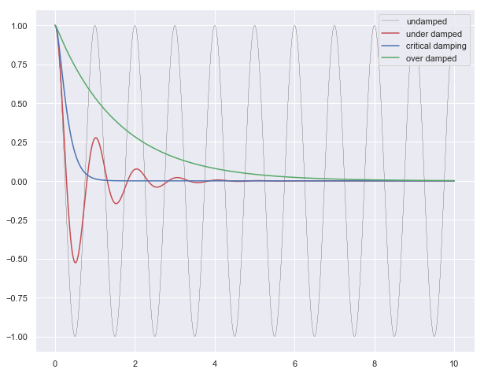
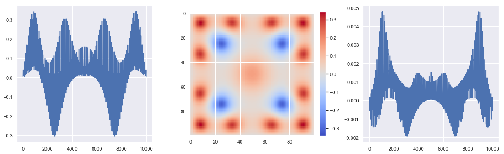

Numerical Methods:
- Integration
- Differential Equations
Integration source
import numpy as np from scipy.integrate import quad, dblquad, tplquad
$$ y = mx +c$$
def f(x): return 5*x + 4 x_lower = 0 # the lower limit of x x_upper = 1 # the upper limit of x val, abserr = quad(f, x_lower, x_upper) print("integral value =", val, ", absolute error =", abserr)
integral value = 6.499999999999999 , absolute error = 7.216449660063516e-14
Bessel function
from scipy.special import jn, yn, jn_zeros, yn_zeros
def integrand(x, n): """ Bessel function of first kind and order n. """ return jn(n, x) x_lower = 0 # the lower limit of x x_upper = 10 # the upper limit of x val, abserr = quad(integrand, x_lower, x_upper, args=(3,)) print(val, abserr)
0.7366751370811073 9.389126882496403e-13
Gaussian function
val, abserr = quad(lambda x: np.exp(-x ** 2), -5.0, 5.0) print("numerical =", val, abserr) analytical = np.sqrt(np.pi) print("analytical =", analytical)
numerical = 1.7724538509027912 4.6261378229003154e-14 analytical = 1.7724538509055159
def integrand(x, y): return np.exp(-x**2-y**2) x_lower = 0 x_upper = 10 y_lower = 0 y_upper = 10 val, abserr = dblquad(integrand, x_lower, x_upper,\ lambda x : y_lower, lambda x: y_upper) print(val, abserr)
0.7853981633974476 1.3753098510218528e-08
Ordinary Differential Equations Source

Odent Source
from scipy.integrate import odeint, ode
def dy(y, t, zeta, w0): """ The right-hand side of the damped oscillator ODE """ x, p = y[0], y[1] dx = p dp = -2 * zeta * w0 * p - w0**2 * x return [dx, dp]
# initial state: y0 = [1.0, 0.0]
# time coodinate to solve the ODE for t = np.linspace(0, 10, 1000) w0 = 2*np.pi*1.0
# solve the ODE problem for three different values of the damping ratio y1 = odeint(dy, y0, t, args=(0.0, w0)) # undamped y2 = odeint(dy, y0, t, args=(0.2, w0)) # under damped y3 = odeint(dy, y0, t, args=(1.0, w0)) # critial damping y4 = odeint(dy, y0, t, args=(5.0, w0)) # over damped
plt.figure(figsize = [10,8]) plt.plot(t, y1[:,0], 'k', label="undamped", linewidth=0.25) plt.plot(t, y2[:,0], 'r', label="under damped") plt.plot(t, y3[:,0], 'b', label=r"critical damping") plt.plot(t, y4[:,0], 'g', label="over damped") plt.legend();

Partial Differential Equations
PDE : Eliptic Equation (Laplace Euation)
$$ \nabla^{2} u + c f(u) = 0 $$
$$\frac{\partial^{2}u}{\partial^{2}x} + \frac{\partial^{2}u}{\partial^{2}x} + cf(u) = 0$$
for $c=1, f(u)=0$ it becomes Laplace Equation

Using Above lattice of finite difference:

$$\large{u_{i−1,j}+u_{i+1,j} + u_{i,j−1} + u{i,j+1} − 4u_{i,j}+cf(u_{i,j})=0}$$
$$u_{i,j}=0; \forall u \in ∂Ω$$
for 4 by 4 lattice view matrices here: source
Problem Type : Solve
$$\large{Ax = b}$$
Implementation of Least square methods to solve a $Ax = b$ problem as a optimization problem
%matplotlib inline import matplotlib.pyplot as plt import numpy as np from scipy.optimize import least_squares from scipy.sparse import coo_matrix import seaborn as sns sns.set()
n = 100 c = 1
def f(u): return u**3 def f_prime(u): return 3 * u**2
Prepare the lattice
def fun(u, n,f, f_prime,c, **kwargs): v = np.zeros((n + 2, n + 2)) #buttom value = 1 v[n+1,:] = 1 # top value = 1 #v[0,:] = 1 # center value = 1 #v[int(n/2),int(n/2)] = 1 u = u.reshape((n, n)) v[1:-1, 1:-1] = u y = v[:-2, 1:-1] + v[2:, 1:-1] + \ v[1:-1, :-2] + v[1:-1, 2:] - \ 4 * u + c * f(u) return y.ravel()
Prepare Jacobians
def compute_jac_indices(n): i = np.arange(n) jj, ii = np.meshgrid(i, i) ii = ii.ravel() jj = jj.ravel() ij = np.arange(n**2) jac_rows = [ij] jac_cols = [ij] mask = ii > 0 ij_mask = ij[mask] jac_rows.append(ij_mask) jac_cols.append(ij_mask - n) mask = ii < n - 1 ij_mask = ij[mask] jac_rows.append(ij_mask) jac_cols.append(ij_mask + n) mask = jj > 0 ij_mask = ij[mask] jac_rows.append(ij_mask) jac_cols.append(ij_mask - 1) mask = jj < n - 1 ij_mask = ij[mask] jac_rows.append(ij_mask) jac_cols.append(ij_mask + 1) return np.hstack(jac_rows), np.hstack(jac_cols)
jac_rows, jac_cols = compute_jac_indices(n)
jac_rows, jac_cols
(array([ 0, 1, 2, ..., 9996, 9997, 9998]), array([ 0, 1, 2, ..., 9997, 9998, 9999]))
def jac(u, n,f, f_prime,c, jac_rows=None, jac_cols=None): jac_values = np.ones_like(jac_cols, dtype=float) jac_values[:n**2] = -4 + c * f_prime(u) return coo_matrix((jac_values, (jac_rows, jac_cols)), shape=(n**2, n**2))
u0 = np.ones(n**2) * 0.5
Optimization: Least Square
res_1 = least_squares(fun, u0, jac=jac, gtol=1e-3, args=(n,f, f_prime,c),\ kwargs={'jac_rows': jac_rows, 'jac_cols': jac_cols}, verbose=1)
`gtol` termination condition is satisfied. Function evaluations 738, initial cost 1.1562e+02, final cost 6.4462e-01, first-order optimality 9.38e-04.
Returned quantities after solution
res_1.x.shape
(10000,)
res_1.x
array([0.00622038, 0.01236634, 0.01833963, ..., 0.01834064, 0.01236645,
0.00622026])
res_1.fun
array([-0.00014825, -0.00029118, -0.00041394, ..., -0.000414 ,
-0.00029121, -0.00014826])
res_1.fun.shape
(10000,)
res_1.jac
<10000x10000 sparse matrix of type '<class 'numpy.float64'>'
with 49600 stored elements in Compressed Sparse Row format>
Plot the solutions
plt.figure(figsize=(16, 5)) plt.subplot(131) plt.plot(res_1.x) plt.subplot(132) plt.imshow(res_1.x.reshape((n, n)),\ cmap='coolwarm',\ vmin=-max(abs(res_1.x)),\ vmax=max(abs(res_1.x))) plt.colorbar(use_gridspec=True,\ fraction=0.046,\ pad=0.04) plt.subplot(133) plt.plot(res_1.fun) plt.tight_layout()

References:
- http://folk.ntnu.no/leifh/teaching/tkt4140/._main000.html
- http://folk.ntnu.no/leifh/teaching/tkt4140/._main055.html
- https://docs.scipy.org/doc/scipy/reference/generated/scipy.optimize.least_squares.html#scipy.optimize.least_squares